现在我们已经基本了解了TypeScript的工作原理和如何用它创建小项目，是时候开始创建一些真正有用的东西了。我们现在要创建一个新的项目，它将介绍一些更现实的用例。
与上一部分相比，一个主要的变化是，我们不再使用ts-node了。它是一个方便的工具，可以帮助你入门，但从长远来看，建议使用官方的TypeScript编译器，该编译器随typescriptnpm-package一起提供。官方编译器会从.ts文件中生成并打包JavaScript文件，这样构建的生产版本就不会再包含任何TypeScript代码。这正是我们想要的结果，因为TypeScript本身不能被浏览器或Node执行。
Setting up the project
我们将为Ilari创建一个项目，他喜欢驾驶小飞机，但很难管理他的飞行记录。他自己是个程序员，所以他不一定需要用户界面，但他希望使用一个带有HTTP请求的软件，并保留以后在应用中添加基于网络的用户界面的可能性。
让我们开始创建我们的第一个真正的项目。Ilari's flight diaries。像往常一样，运行npm init并安装typescript包作为开发依赖。
npm install typescript --save-dev
TypeScript的本地编译器（tsc）可以通过生成tsconfig.json文件帮助我们初始化项目。
首先，我们需要将tsc命令添加到package.json的可执行脚本列表中（除非你已经全局安装了typescript）。即使你在全局范围内安装了TypeScript，你也应该把它作为一个开发依赖项添加到你的项目中。
运行tsc的npm脚本被设置成如下。
{
// ..
"scripts": {
"tsc": "tsc" // highlight-line
},
// ..
}
光秃秃的tsc命令经常被添加到scripts中，以便其他脚本可以使用它，因此，不要惊讶地发现它在项目中被设置成这样。
我们现在可以通过运行以下程序来初始化我们的tsconfig.json设置。
注意实际参数前的额外--!--之前的参数被解释为用于npm命令，而之后的参数是指通过脚本运行的命令（即本例中的tsc）。
我们刚刚创建的tsconfig.json文件包含了一个长长的列表，列出了我们可以使用的所有配置。然而，其中大部分都被注释掉了。
研究这个文件可以帮助你找到一些你可能需要的配置选项。
保留这些注释行也是完全可以的，以防你有一天会需要它们。
目前，我们希望以下内容是有效的。
{
"compilerOptions": {
"target": "ES6",
"outDir": "./build/",
"module": "commonjs",
"strict": true,
"noUnusedLocals": true,
"noUnusedParameters": true,
"noImplicitReturns": true,
"noFallthroughCasesInSwitch": true,
"esModuleInterop": true
}
}
我们来看看每个配置。
target配置告诉编译器在生成JavaScript时要使用哪个ECMAScript版本。ES6被大多数浏览器所支持，所以它是一个好的、安全的选择。
outDir tells where the compiled code should be placed.
module tells the compiler that we want to use CommonJS modules in the compiled code. This means we can use the old require syntax instead of the import one, which is not supported in older versions of Node, such as version 10.
strict is actually a shorthand for multiple separate options:
noImplicitAny, noImplicitThis, alwaysStrict, strictBindCallApply, strictNullChecks, strictFunctionTypes and strictPropertyInitialization.
他们指导我们的编码风格，以更严格地使用TypeScript的功能。
对我们来说，也许最重要的是已经很熟悉的noImplicitAny。它可以防止隐式设置类型any，例如，如果你不输入函数的参数，就会发生这种情况。
关于其余配置的细节可以在 tsconfig documentation 中找到。
官方文档建议使用strict。
noUnusedLocals prevents having unused local variables, and noUnusedParameters throws an error if a function has unused parameters.
noFallthroughCasesInSwitch ensures that, in a switch case, each case ends either with a return or a break statement.
esModuleInterop allows interoperability between CommonJS and ES Modules; see more in the documentation.
现在我们已经设置了我们的配置，我们可以继续安装express，当然还有@types/express。另外，由于这是一个真正的项目，它打算随着时间的推移而发展，我们将从一开始就使用eslint。
npm install express
npm install --save-dev eslint @types/express @typescript-eslint/eslint-plugin @typescript-eslint/parser
现在我们的package.json应该如下所示：
{
"name": "flight_diary",
"version": "1.0.0",
"description": "",
"main": "index.js",
"scripts": {
"tsc": "tsc"
},
"author": "Jane Doe",
"license": "ISC",
"devDependencies": {
"@types/express": "^4.17.13",
"@typescript-eslint/eslint-plugin": "^5.12.1",
"@typescript-eslint/parser": "^5.12.1",
"eslint": "^8.9.0",
"typescript": "^4.5.5"
},
"dependencies": {
"express": "^4.17.3"
}
}
我们还创建了一个.eslintrc文件，内容如下。
{
"extends": [
"eslint:recommended",
"plugin:@typescript-eslint/recommended",
"plugin:@typescript-eslint/recommended-requiring-type-checking"
],
"plugins": ["@typescript-eslint"],
"env": {
"browser": true,
"es6": true,
"node": true
},
"rules": {
"@typescript-eslint/semi": ["error"],
"@typescript-eslint/explicit-function-return-type": "off",
"@typescript-eslint/explicit-module-boundary-types": "off",
"@typescript-eslint/restrict-template-expressions": "off",
"@typescript-eslint/restrict-plus-operands": "off",
"@typescript-eslint/no-unsafe-member-access": "off",
"@typescript-eslint/no-unused-vars": [
"error",
{ "argsIgnorePattern": "^_" }
],
"no-case-declarations": "off"
},
"parser": "@typescript-eslint/parser",
"parserOptions": {
"project": "./tsconfig.json"
}
}
现在我们只需要设置我们的开发环境，我们就可以开始编写一些严肃的代码了。
对此有许多不同的选择。一种选择是使用熟悉的nodemon与ts-node。然而，正如我们之前看到的，ts-node-dev做了完全相同的事情，所以我们将使用它来代替。
所以，让我们安装ts-name-dev。
npm install --save-dev ts-node-dev
我们最后再定义几个npm脚本，然后就可以开始了。
{
// ...
"scripts": {
"tsc": "tsc",
"dev": "ts-node-dev index.ts", // highlight-line
"lint": "eslint --ext .ts ." // highlight-line
},
// ...
}
正如你所看到的，在开始实际的编码之前，有很多东西要经过。当你在处理一个真正的项目时，仔细的准备工作支持你的开发过程。花点时间为你自己和你的团队创造一个良好的设置，这样从长远来看，一切都会顺利进行。
Let there be code
现在我们终于可以开始编码了!像往常一样，我们从创建一个ping端点开始，只是为了确保一切都在工作。
index.ts文件的内容。
import express from 'express';
const app = express();
app.use(express.json());
const PORT = 3000;
app.get('/ping', (_req, res) => {
console.log('someone pinged here');
res.send('pong');
});
app.listen(PORT, () => {
console.log(`Server running on port ${PORT}`);
});
现在，如果我们用npm run dev来运行这个应用，我们可以确认对http://localhost:3000/ping 的请求给出了pong的响应，所以我们的配置已经设定好了
当用npm run dev启动应用时，它以开发模式运行。
当我们以后在生产中操作该应用时，开发模式根本不适合。
让我们试着通过运行TypeScript编译器来创建一个生产构建。因为我们已经在tsconfig.json中定义了outdir，所以除了运行脚本npm run tsc之外，真的没有其他事情要做。
就像变魔术一样，Express后端本地可运行的JavaScript生产构建被创建在build目录下的index.js文件中。编译后的代码如下所示：这样
"use strict";
var __importDefault = (this && this.__importDefault) || function (mod) {
return (mod && mod.__esModule) ? mod : { "default": mod };
};
Object.defineProperty(exports, "__esModule", { value: true });
const express_1 = __importDefault(require("express"));
const app = (0, express_1.default)();
app.use(express_1.default.json());
const PORT = 3000;
app.get('/ping', (_req, res) => {
console.log('someone pinged here');
res.send('pong');
});
app.listen(PORT, () => {
console.log(`Server running on port ${PORT}`);
});
目前，如果我们运行eslint，它也会解释build目录下的文件。我们不希望这样，因为那里的代码是由编译器生成的。我们可以通过创建一个.eslintignore文件，列出我们希望eslint忽略的内容，就像我们对git和.gitignore所做的那样。
让我们添加一个npm脚本，以便在生产模式下运行该应用。
{
// ...
"scripts": {
"tsc": "tsc",
"dev": "ts-node-dev index.ts",
"lint": "eslint --ext .ts .",
"start": "node build/index.js" // highlight-line
},
// ...
}
当我们用npm start运行应用时，我们可以验证生产模式的构建也是有效的。
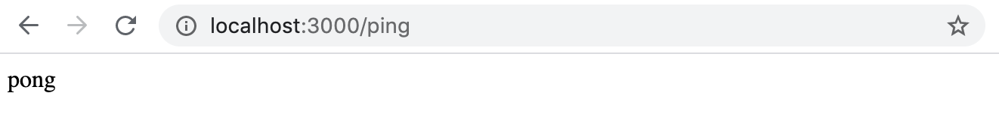
现在我们有一个最小的工作管道来开发我们的项目。
在我们的编译器和eslint的帮助下，它也确保了良好的代码质量得以保持。有了这个基础，我们实际上可以开始创建一个应用，以后可以部署到生产环境中。
Implementing the functionality
最后，我们准备开始写一些代码。
让我们从最基本的开始。Ilari希望能够记录他在飞行旅程中的经历。
他希望能够保存包含以下内容的日记条目。
我们已经获得了一些样本数据，我们将以这些数据为基础进行开发。
这些数据是以json格式保存的，可以在这里找到。
这些数据如下所示：下面这样。
[
{
"id": 1,
"date": "2017-01-01",
"weather": "rainy",
"visibility": "poor",
"comment": "Pretty scary flight, I'm glad I'm alive"
},
{
"id": 2,
"date": "2017-04-01",
"weather": "sunny",
"visibility": "good",
"comment": "Everything went better than expected, I'm learning much"
},
// ...
]
让我们从创建一个返回所有飞行日记条目的端点开始。
首先，我们需要对如何构造我们的源代码做出一些决定。最好是把所有的源代码放在src目录下，这样源代码就不会和配置文件混在一起。
我们将把index.ts移到那里，并对npm脚本做必要的修改。
我们将把所有routers，负责处理一组特定资源的模块，如diaries，放在src/routes目录下。
这与我们在第4章节中的做法有些不同，在那里我们使用目录src/controllers。
负责所有日记端点的路由器在src/routes/diaries.ts，如下所示：
import express from 'express';
const router = express.Router();
router.get('/', (_req, res) => {
res.send('Fetching all diaries!');
});
router.post('/', (_req, res) => {
res.send('Saving a diary!');
});
export default router;
我们将把所有对前缀/api/diaries的请求路由到_index.ts_中的那个特定路由器。
import express from 'express';
import diaryRouter from './routes/diaries'; // highlight-line
const app = express();
app.use(express.json());
const PORT = 3000;
app.get('/ping', (_req, res) => {
console.log('someone pinged here');
res.send('pong');
});
app.use('/api/diaries', diaryRouter); // highlight-line
app.listen(PORT, () => {
console.log(`Server running on port ${PORT}`);
});
现在，如果我们向http://localhost:3000/api/diaries 发出HTTP GET请求，我们应该看到消息正在获取所有日记！。
接下来，我们需要开始从应用中提供种子数据（在这里找到[https://github.com/fullstack-hy2020/misc/blob/master/diaryentries.json]）。我们将获取数据并将其保存到data/diaries.json。
我们不会在路由器中编写实际数据操作的代码。我们将创建一个service来处理数据操作。
将 "业务逻辑 "从路由器代码中分离出来是一种常见的做法，它通常被称为service。
服务这个名字源于领域驱动设计，并被Spring框架所普及。
让我们创建一个src/services目录，并且
在其中放置diaryService.ts文件。
该文件包含两个用于获取和保存日记条目的函数。
import diaryData from '../../data/diaries.json';
const getEntries = () => {
return diaryData;
};
const addDiary = () => {
return null;
};
export default {
getEntries,
addDiary
};
但有些地方不对。
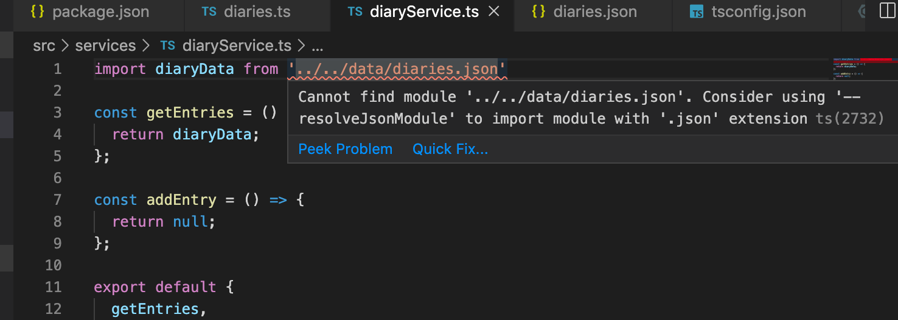
提示说我们可能要使用resolveJsonModule。让我们把它添加到我们的tsconfig中。
{
"compilerOptions": {
"target": "ES6",
"outDir": "./build/",
"module": "commonjs",
"strict": true,
"noUnusedLocals": true,
"noUnusedParameters": true,
"noImplicitReturns": true,
"noFallthroughCasesInSwitch": true,
"esModuleInterop": true,
"resolveJsonModule": true // highlight-line
}
}
然后我们的问题就解决了。
NB:由于某些原因，VSCode往往产生警告说它不能从服务中找到.../.../data/diaries.json文件，尽管该文件存在。这是编辑器中的一个错误，当编辑器重新启动时就会消失。
早些时候，我们看到编译器如何通过分配给它的值来决定变量的类型。
同样地，编译器可以解释由对象和数组组成的大型数据集。
由于这个原因，如果我们试图对我们正在处理的json数据做一些可疑的事情，编译器实际上可以警告我们。
例如，如果我们正在处理一个包含特定类型的对象的数组，而我们试图添加一个没有其他对象所拥有的所有字段的对象，或者有类型冲突（例如，在应该有字符串的地方有一个数字），编译器会给我们一个警告。
尽管编译器能很好地确保我们不做任何不必要的事情，但自己定义数据的类型还是比较安全的。
目前，我们有一个基本的TypeScript express应用，但代码中几乎没有任何实际的typings。
既然我们知道天气和可见度字段应该接受什么类型的数据，我们就没有理由不在代码中加入它们的类型。
让我们为我们的类型创建一个文件，types.ts，在这里我们将为这个项目定义所有的类型。
首先，让我们使用允许的字符串的union type来输入Weather和Visibility值。
export type Weather = 'sunny' | 'rainy' | 'cloudy' | 'windy' | 'stormy';
export type Visibility = 'great' | 'good' | 'ok' | 'poor';
然后，我们可以继续创建一个DiaryEntry类型，它将是一个接口。
export interface DiaryEntry {
id: number;
date: string;
weather: Weather;
visibility: Visibility;
comment: string;
}
我们现在可以尝试输入我们导入的json。
import diaryData from '../../data/diaries.json';
import { DiaryEntry } from '../types'; // highlight-line
const diaries: Array<DiaryEntry> = diaryData; // highlight-line
const getEntries = (): Array<DiaryEntry> => { // highlight-line
return diaries; // highlight-line
};
const addDiary = () => {
return null;
};
export default {
getEntries,
addDiary
};
但是由于json已经声明了它的值，为数据集指定一个类型会导致错误。
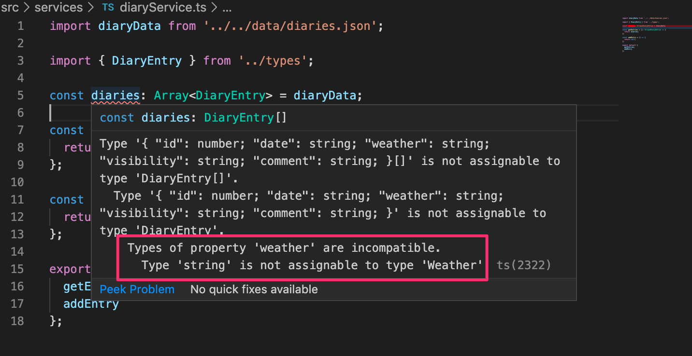
错误信息的结尾揭示了问题所在：weather字段是不兼容的。在DiaryEntry中，我们指定其类型为Weather，但
TypeScript编译器已经推断其类型为string。
我们可以通过做一个type assertion来解决这个问题。只有当我们确定我们知道自己在做什么的时候才可以这样做。
如果我们用关键字as断言变量diaryData的类型为DiaryEntry，一切都会正常。
import diaryData from '../../data/entries.json'
import { Weather, Visibility, DiaryEntry } from '../types'
const diaries: Array<DiaryEntry> = diaryData as Array<DiaryEntry>; // highlight-line
const getEntries = (): Array<DiaryEntry> => {
return diaries;
}
const addDiary = () => {
return null
}
export default {
getEntries,
addDiary
};
除非没有其他办法，否则我们不应该使用类型断言，因为我们总是有可能断言一个不合适的类型给一个对象，导致一个讨厌的运行时错误。
虽然编译器相信你在使用as时知道你在做什么，但通过这样做，我们没有使用TypeScript的全部力量，而是依靠编码者来保护代码。
在我们的案例中，我们可以改变导出数据的方式，这样我们就可以在数据文件中输入数据。
因为我们不能在JSON文件中使用类型，所以我们应该将json文件转换为ts文件，像这样导出类型的数据。
import { DiaryEntry } from "../src/types"; // highlight-line
const diaryEntries: Array<DiaryEntry> = [ // highlight-line
{
"id": 1,
"date": "2017-01-01",
"weather": "rainy",
"visibility": "poor",
"comment": "Pretty scary flight, I'm glad I'm alive"
},
// ...
];
export default diaryEntries; // highlight-line
现在，当我们导入数组时，编译器会正确地解释它，并且weather和visibility字段会被正确理解。
import diaries from '../../data/diaries'; // highlight-line
import { DiaryEntry } from '../types';
const getEntries = (): Array<DiaryEntry> => {
return diaries;
}
const addDiary = () => {
return null;
}
export default {
getEntries,
addDiary
};
注意，如果我们希望能够保存没有某个字段的条目，例如comment，我们可以通过在类型声明中添加?，将字段的类型设置为optional。
export interface DiaryEntry {
id: number;
date: string;
weather: Weather;
visibility: Visibility;
comment?: string; // highlight-line
}
Node and JSON modules
需要注意的是，在使用tsconfig resolveJsonModule选项时，可能出现一个问题。
{
"compilerOptions": {
// ...
"resolveJsonModule": true // highlight-line
}
}
根据node文档中的file modules。
node将尝试按照扩展的顺序来解决模块。
除此之外，默认情况下，ts-node和ts-node-dev将可能的节点模块扩展列表扩展为。
["js", "json", "node", "ts", "tsx"]
NB:.js、.json和.node文件作为TypeScript中的模块的有效性取决于环境配置，包括tsconfig选项，例如allowJs和resolveJsonModule。
考虑一个包含文件的平面文件夹结构。
├── myModule.json
└── myModule.ts
在TypeScript中，当resolveJsonModule选项设置为true时，文件myModule.json成为有效的节点模块。现在，设想一个场景，我们希望将文件myModule.ts投入使用。
import myModule from "./myModule";
仔细看一下节点模块的扩展顺序。
["js", "json", "node", "ts", "tsx"]
我们注意到.json文件扩展名优先于.ts，所以myModule.json将被导入而不是myModule.ts。
为了避免吃时间的错误，建议在一个平面目录中，每个具有有效节点模块扩展名的文件都有一个唯一的文件名。
Utility Types
有时，我们可能想使用一种类型的特定修改。
例如，考虑一个用于列出一些数据的页面，其中一些是敏感的，一些是不敏感的。
我们可能想确保没有敏感数据被使用或显示。我们可以挑选我们允许使用的类型的字段来执行这一点。
我们可以通过使用实用类型Pick来做到这一点。
在我们的项目中，我们应该考虑到Ilari可能想创建一个他所有日记条目的列表，不包括评论字段，因为在一次非常可怕的飞行中，他可能最终写了一些他不一定想给其他人看的东西。
Pick实用类型允许我们选择我们想使用的现有类型的哪些字段。
Pick可以用来构建一个全新的类型，也可以用来通知一个函数在运行时应该返回什么。
实用类型是一种特殊的类型工具，但它们可以像普通类型一样使用。
在我们的例子中，为了创建一个用于公开展示的DiaryEntry的 "审查 "版本，我们可以在函数声明中使用Pick。
const getNonSensitiveEntries =
(): Array<Pick<DiaryEntry, 'id' | 'date' | 'weather' | 'visibility'>> => {
// ...
}
而编译器将期望该函数返回一个修改后的DiaryEntry类型的值数组，其中只包括四个选定的字段。
由于Pick要求它所修改的类型作为类型变量给出，就像Array一样，我们现在有两个嵌套的类型变量，语法开始变得有点奇怪了。
我们可以通过使用替代 数组语法来提高代码的可读性。
const getNonSensitiveEntries =
(): Pick<DiaryEntry, 'id' | 'date' | 'weather' | 'visibility'>[] => {
// ...
}
在这种情况下，我们只想排除一个字段。
所以使用Omit工具类型会更好，我们可以用它来声明要排除哪些字段。
const getNonSensitiveEntries = (): Omit<DiaryEntry, 'comment'>[] => {
// ...
}
另一种方法是为NonSensitiveDiaryEntry声明一个全新的类型。
export type NonSensitiveDiaryEntry = Omit<DiaryEntry, 'comment'>;
现在的代码变成了。
import diaries from '../../data/diaries';
import { NonSensitiveDiaryEntry, DiaryEntry } from '../types'; // highlight-line
const getEntries = (): DiaryEntry[] => {
return diaries;
};
const getNonSensitiveEntries = (): NonSensitiveDiaryEntry[] => { // highlight-line
return diaries;
};
const addDiary = () => {
return null;
};
export default {
getEntries,
addDiary,
getNonSensitiveEntries // highlight-line
};
在我们的应用中，有一件事是值得关注的。在getNonSensitiveEntries中，我们正在返回完整的日记条目，而且没有给出错误，尽管输入了!
发生这种情况是因为TypeScript只检查我们是否有所有需要的字段，但多余的字段不被禁止。在我们的例子中，这意味着返回一个DiaryEntry[]类型的对象是不禁止的，但是如果我们试图访问comment字段，这将是不可能的，因为我们将访问一个TypeScript不知道的字段，即使它存在。
不幸的是，如果你不知道你在做什么，这可能会导致不必要的行为；就TypeScript而言，这种情况是有效的，但你很可能允许使用不想要的东西。
如果我们现在从getNonSensitiveEntries函数中返回所有的diaryEntries到frontend，我们实际上会将不需要的字段泄露给请求的浏览器，尽管我们的类型似乎暗示了这一点
因为TypeScript并不修改实际数据，而只是修改其类型，所以我们需要自己排除这些字段。
import diaries from '../../data/entries.ts'
import { NonSensitiveDiaryEntry, DiaryEntry } from '../types'
const getEntries = () : DiaryEntry[] => {
return diaries
}
// highlight-start
const getNonSensitiveEntries = (): NonSensitiveDiaryEntry[] => {
return diaries.map(({ id, date, weather, visibility }) => ({
id,
date,
weather,
visibility,
}));
};
// highlight-end
const addDiary = () => {
return []
}
export default {
getEntries,
getNonSensitiveEntries,
addDiary
}
如果我们现在尝试用基本的DiaryEntry类型来返回这些数据，也就是说，如果我们按以下方式输入函数。
const getNonSensitiveEntries = (): DiaryEntry[] => {
我们会得到以下错误。
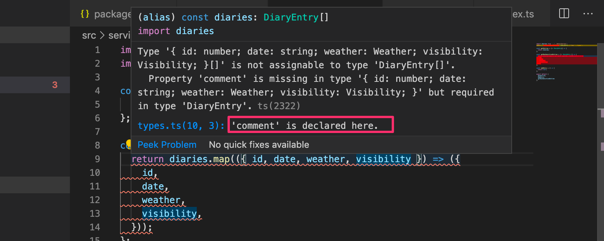
同样，错误信息的最后一行是最有帮助的一行。让我们撤销这个不受欢迎的修改。
实用程序类型包括许多方便的工具，花点时间研究一下文档是绝对值得的。
最后，我们可以完成返回所有日记条目的路线。
import express from 'express';
import diaryService from '../services/diaryService'; // highlight-line
const router = express.Router();
router.get('/', (_req, res) => {
res.send(diaryService.getNonSensitiveEntries()); // highlight-line
});
router.post('/', (_req, res) => {
res.send('Saving a diary!');
});
export default router;
响应是我们所期望的那样。
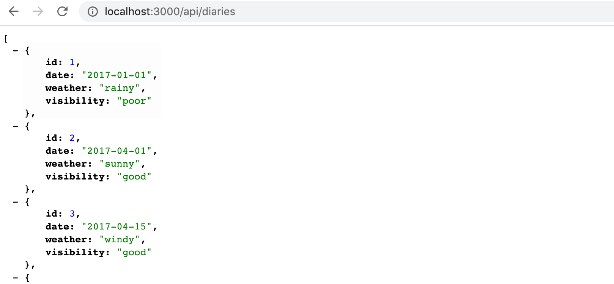
Preventing an accidental undefined result
让我们扩展后端，以支持通过HTTP GET请求来获取一个特定的条目，路由api/diaries/:id。
DiaryService需要扩展一个findById函数。
// ...
// highlight-start
const findById = (id: number): DiaryEntry => {
const entry = diaries.find(d => d.id === id);
return entry;
};
// highlight-end
export default {
getEntries,
getNonSensitiveEntries,
addDiary,
findById // highlight-line
}
但是又一次出现了一个新的问题。
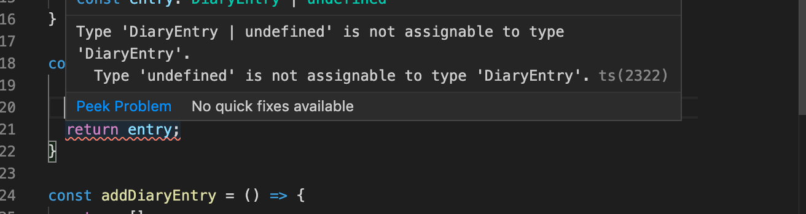
问题是不能保证能找到一个指定id的条目。
很好，我们在编译阶段就已经意识到了这个潜在的问题。如果没有TypeScript，我们就不会被警告这个问题，在最坏的情况下，我们最终可能会返回一个undefined对象，而不是通知用户指定的条目没有被找到。
首先，在这样的情况下，我们需要决定如果没有找到一个对象，返回值应该是什么，以及如何处理这种情况。
如果没有找到对象，数组的find方法会返回undefined，而这对我们来说其实是没有问题的。
我们可以通过输入如下的返回值来解决我们的问题。
const findById = (id: number): DiaryEntry | undefined => { // highlight-line
const entry = diaries.find(d => d.id === id);
return entry;
}
路线处理程序如下。
import express from 'express';
import diaryService from '../services/diaryService'
router.get('/:id', (req, res) => {
const diary = diaryService.findById(Number(req.params.id));
if (diary) {
res.send(diary);
} else {
res.sendStatus(404);
}
});
// ...
export default router;
Adding a new diary
我们开始建立HTTP POST端点，用于添加新的飞行日记条目。
新条目的类型应该与现有数据相同。
响应的代码处理看起来如下。
router.post('/', (req, res) => {
const { date, weather, visibility, comment } = req.body;
const newDiaryEntry = diaryService.addDiary(
date,
weather,
visibility,
comment,
);
res.json(newDiaryEntry);
});
diaryService中的相应方法如下所示：
import {
NonSensitiveDiaryEntry,
DiaryEntry,
Visibility, // highlight-line
Weather // highlight-line
} from '../types';
const addDiary = (
date: string, weather: Weather, visibility: Visibility, comment: string
): DiaryEntry => {
const newDiaryEntry = {
id: Math.max(...diaries.map(d => d.id)) + 1,
date,
weather,
visibility,
comment,
}
diaries.push(newDiaryEntry);
return newDiaryEntry;
};
正如你所看到的，addDiary函数现在变得相当难读，因为我们把所有字段都作为单独的参数。
把数据作为一个对象发送到函数中可能会更好。
router.post('/', (req, res) => {
const { date, weather, visibility, comment } = req.body;
const newDiaryEntry = diaryService.addDiary({ // highlight-line
date,
weather,
visibility,
comment,
}); // highlight-line
res.json(newDiaryEntry);
})
但是等等，这个对象的类型是什么？它不完全是一个DiaryEntry，因为它仍然缺少id字段。
为尚未保存的条目创建一个新的类型，NewDiaryEntry，可能很有用。
让我们在types.ts中使用现有的DiaryEntry类型和Omit实用类型创建它。
export type NewDiaryEntry = Omit<DiaryEntry, 'id'>;
现在我们可以在我们的DiaryService中使用这个新类型。
并在创建要保存的条目时对新的条目对象进行结构化。
import { NewDiaryEntry, NonSensitiveDiaryEntry, DiaryEntry } from '../types'; // highlight-line
// ...
const addDiary = ( entry: NewDiaryEntry ): DiaryEntry => { // highlight-line
const newDiaryEntry = {
id: Math.max(...diaries.map(d => d.id)) + 1,
...entry // highlight-line
};
diaries.push(newDiaryEntry);
return newDiaryEntry;
};
现在，代码看起来干净多了
我们的代码中仍有一个产生警告。
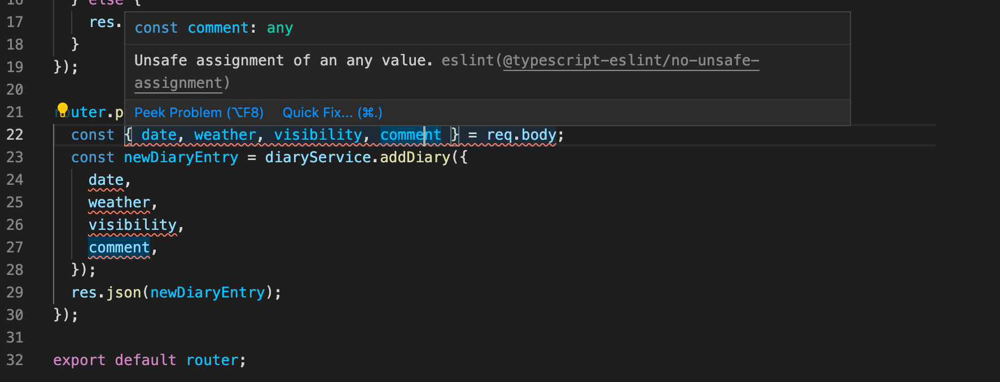
原因是eslint规则@typescript-eslint/no-unsafe-assignment阻止我们将请求体的字段分配给变量。
目前，让我们忽略整个文件中的eslint规则，在文件的第一行加入以下内容。
/* eslint-disable @typescript-eslint/no-unsafe-assignment */
为了解析传入的数据，我们必须配置json中间件。
import express from 'express';
import diaryRouter from './routes/diaries';
const app = express();
app.use(express.json()); // highlight-line
const PORT = 3000;
app.use('/api/diaries', diaryRouter);
app.listen(PORT, () => {
console.log(`Server running on port ${PORT}`);
});
现在，应用已经准备好接收HTTP POST请求，以获取正确类型的新日记条目
Proofing requests
当我们接受来自外部的数据时，有很多事情会出错。
应用很少能完全独立工作，我们不得不接受这样一个事实：来自我们系统外的数据不能被完全信任。
当我们从外部来源接收数据时，不可能在我们收到数据时已经打好了。我们需要做出决定，如何处理由此带来的不确定性。
被禁用的eslint规则实际上在给我们一个提示，即下面的赋值是一个有风险的。
const newDiaryEntry = diaryService.addDiary({
date,
weather,
visibility,
comment,
});
我们当然希望能确定post请求中的对象是正确的类型，所以让我们定义一个函数toNewDiaryEntry，接收请求体作为参数并返回一个正确类型的NewDiaryEntry对象。该函数应在文件utils.ts中定义。
路由定义使用该函数，如下所示。
import toNewDiaryEntry from '../utils'; // highlight-line
// ...
router.post('/', (req, res) => {
try {
const newDiaryEntry = toNewDiaryEntry(req.body); // highlight-line
const addedEntry = diaryService.addDiary(newDiaryEntry); // highlight-line
res.json(addedEntry);
} catch (error: unknown) {
let errorMessage = 'Something went wrong.';
if (error instanceof Error) {
errorMessage += ' Error: ' + error.message;
}
res.status(400).send(errorMessage);
}
})
我们现在也可以删除第一行，它忽略了eslint规则no-unsafe-assignment。
由于我们现在正在编写安全代码，并试图确保我们从请求中准确地获得我们想要的数据，我们应该开始解析和验证我们期望收到的每个字段。
函数toNewDiaryEntry的骨架看起来如下。
import { NewDiaryEntry } from './types';
const toNewDiaryEntry = (object): NewDiaryEntry => {
const newEntry: NewDiaryEntry = {
// ...
};
return newEntry;
};
export default toNewDiaryEntry;
该函数应该解析每个字段，并确保返回值正好是NewDiaryEntry类型。这意味着我们应该分别检查每个字段。
我们再次遇到一个类型问题：什么是object类型？由于object实际上是一个请求的主体，Express将它打成了any。由于这个函数的想法是将未知类型的字段映射到正确类型的字段，并检查它们是否按预期定义，这可能是我们实际上想要允许any类型的罕见情况。
然而，如果我们将对象输入为any，eslint会给我们两个投诉。
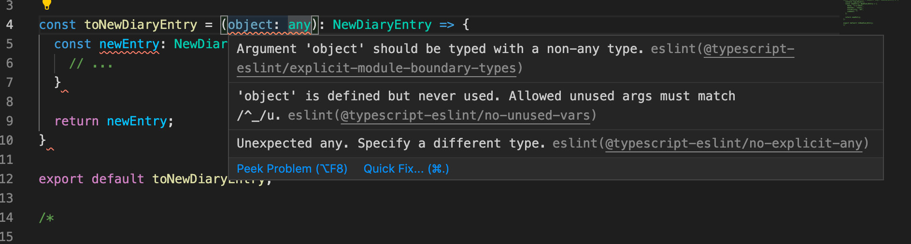
我们可以忽略这些规则，但更好的办法是遵循编辑器在Quick Fix中给出的建议，将参数类型设置为未知。
import { NewDiaryEntry } from './types';
const toNewDiaryEntry = (object: unknown): NewDiaryEntry => { // highlight-line
const newEntry: NewDiaryEntry = {
// ...
}
return newEntry;
}
export default toNewDiaryEntry;
unknown是我们这种输入验证情况的理想类型，因为我们还不需要定义类型来匹配任何类型，而是可以先验证类型，然后确认预期类型。通过使用unknown，我们也不需要担心@typescript-eslint/no-explicit-any eslint规则，因为我们没有使用any。然而，在某些情况下，我们可能仍然需要使用any，因为我们还不确定类型，需要访问any对象的属性，以便验证或类型检查属性值本身。
让我们开始为object的每个字段创建解析器。
为了验证comment字段，我们需要检查它是否存在，并确保它的类型是string。
这个函数应该如下所示：
const parseComment = (comment: unknown): string => {
if (!comment || !isString(comment)) {
throw new Error('Incorrect or missing comment');
}
return comment;
};
该函数得到一个类型为unknown的参数，如果它存在并且是正确的类型，则将其作为string类型返回。
字符串验证函数如下所示：
const isString = (text: unknown): text is string => {
return typeof text === 'string' || text instanceof String;
};
该函数是一个所谓的类型保护。这意味着它是一个返回布尔值和的函数，它有一个类型谓词作为返回类型。在我们的例子中，类型谓词是。
类型谓词的一般形式是_parameterName is Type_，其中_parameterName_是函数参数的名称，_Type_是目标类型。
如果类型保护函数返回真，TypeScript编译器就知道被测试的变量具有在类型谓词中定义的类型。
在调用类型保护之前，变量comment的实际类型是不知道的。
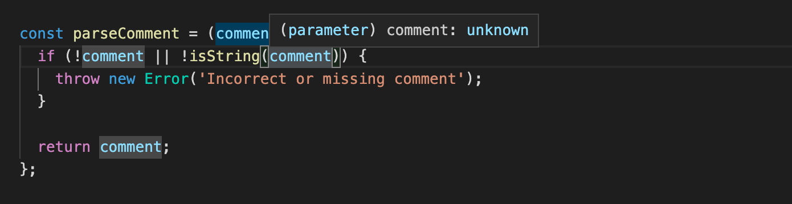
但是在调用之后，如果代码经过了异常（即类型保护返回真），那么编译器就知道comment是string类型。
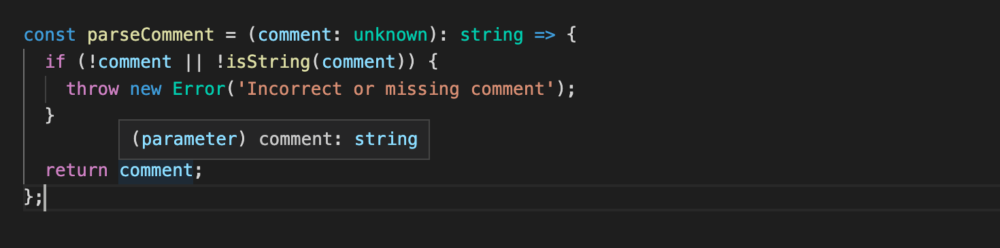
为什么我们在字符串类型保护中要有两个条件？
const isString = (text: unknown): text is string => {
return typeof text === 'string' || text instanceof String; // highlight-line
}
像这样写防护措施还不够吗？
const isString = (text: unknown): text is string => {
return typeof text === 'string';
}
最有可能的是，较简单的形式对于所有的实际目的来说已经足够好了。
然而，如果我们想绝对确定，两个条件都需要。
在JavaScript中，有两种不同的方法来创建字符串对象，这两种方法在typeof和instanceof操作符方面的工作方式有点不同。
const a = "I'm a string primitive";
const b = new String("I'm a String Object");
typeof a; --> returns 'string'
typeof b; --> returns 'object'
a instanceof String; --> returns false
b instanceof String; --> returns true
然而，不太可能有人会用构造函数来创建一个字符串。
最有可能的是，类型保护的简单版本就可以了。
接下来，让我们考虑一下date字段。
解析和验证日期对象与我们对注释所做的相当相似。
由于TypeScript并不真正知道日期的类型，我们需要把它当作一个字符串。
但是我们仍然应该使用JavaScript级别的验证来检查日期格式是否可以接受。
我们将添加以下函数。
const isDate = (date: string): boolean => {
return Boolean(Date.parse(date));
};
const parseDate = (date: unknown): string => {
if (!date || !isString(date) || !isDate(date)) {
throw new Error('Incorrect or missing date: ' + date);
}
return date;
};
这些代码其实没什么特别的。唯一的一点是，我们不能在这里使用类型保护，因为在这种情况下，日期只被认为是一个字符串。
注意，即使parseDate函数接受date变量为未知数，在我们用isString检查类型后，它的类型被设置为字符串，这就是为什么我们可以把变量交给isDate函数，要求它是一个字符串而没有任何问题。
最后我们准备进入最后两种类型，即天气和可见度。
我们希望验证和解析的工作方式如下。
const parseWeather = (weather: unknown): Weather => {
if (!weather || !isString(weather) || !isWeather(weather)) {
throw new Error('Incorrect or missing weather: ' + weather);
}
return weather;
};
问题是：我们怎样才能验证字符串是特定形式的？
一种可能的写类型保护的方法是这样的。
const isWeather = (str: string): str is Weather => {
return ['sunny', 'rainy', 'cloudy', 'stormy'].includes(str);
};
这样做就可以了，但问题是，如果类型被改变，Weather的可能值列表不一定与类型定义保持同步。
这肯定不是好事，因为我们希望所有可能的天气类型都有一个来源。
在我们的例子中，一个更好的解决方案是改进实际的天气类型。我们应该使用TypeScript的枚举，而不是类型别名，这允许我们在运行时在我们的代码中使用实际值，而不仅仅是在编译阶段。
让我们重新定义类型Weather如下。
export enum Weather {
Sunny = 'sunny',
Rainy = 'rainy',
Cloudy = 'cloudy',
Stormy = 'stormy',
Windy = 'windy',
}
现在我们可以检查一个字符串是否是可接受的值之一，类型保护可以这样写。
// eslint-disable-next-line @typescript-eslint/no-explicit-any
const isWeather = (param: any): param is Weather => {
// eslint-disable-next-line @typescript-eslint/no-unsafe-argument
return Object.values(Weather).includes(param);
};
这里需要注意的一点是，我们已经把参数类型改为any。如果它是字符串，那么includes检查就不会被编译。如果你考虑到函数的可重用性，这也是有道理的。通过允许any作为参数，这个函数可以被放心地使用，因为无论我们向它输入什么，这个函数总是告诉我们这个变量是否是有效的天气。
函数parseWeather可以简化一些。
const parseWeather = (weather: unknown): Weather => {
if (!weather || !isWeather(weather)) { // highlight-line
throw new Error('Incorrect or missing weather: ' + weather);
}
return weather;
};
在这些改动之后，出现了一个问题。我们在文件data/diaries.ts中的数据不符合我们的类型了。
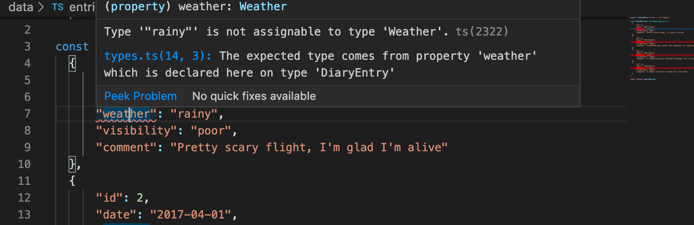
这是因为我们不能只是假设一个字符串是一个枚举。
我们可以通过使用toNewDiaryEntry函数将初始数据元素映射到DiaryEntry类型来解决这个问题。
import { DiaryEntry } from "../src/types";
import toNewDiaryEntry from "../src/utils";
const data = [
{
"id": 1,
"date": "2017-01-01",
"weather": "rainy",
"visibility": "poor",
"comment": "Pretty scary flight, I'm glad I'm alive"
},
// ...
]
const diaryEntries: DiaryEntry [] = data.map(obj => {
const object = toNewDiaryEntry(obj) as DiaryEntry;
object.id = obj.id;
return object;
});
export default diaryEntries;
注意，由于toNewDiaryEntry返回一个NewDiaryEntry类型的对象，我们需要用as操作符断言它是DiaryEntry。
枚举通常用于有一组预先确定的值的情况下，预计在未来不会改变。通常枚举用于更严格的不变的值（例如，工作日、月份、红心方向），但由于它们为我们提供了一个验证传入值的好方法，我们不妨在我们的案例中使用它们。
我们仍然需要对visibility给予同样的处理。该枚举看起来如下。
export enum Visibility {
Great = 'great',
Good = 'good',
Ok = 'ok',
Poor = 'poor',
}
下面是类型保护和解析器。
// eslint-disable-next-line @typescript-eslint/no-explicit-any
const isVisibility = (param: any): param is Visibility => {
// eslint-disable-next-line @typescript-eslint/no-unsafe-argument
return Object.values(Visibility).includes(param);
};
const parseVisibility = (visibility: unknown): Visibility => {
if (!visibility || !isVisibility(visibility)) {
throw new Error('Incorrect or missing visibility: ' + visibility);
}
return visibility;
};
最后，我们可以敲定toNewDiaryEntry函数，它负责验证和解析帖子数据的字段。不过，还有一件事需要注意。如果我们试图访问参数object的字段，如下。
const toNewDiaryEntry = (object: unknown): NewDiaryEntry => {
const newEntry: NewDiaryEntry = {
comment: parseComment(object.comment),
date: parseDate(object.date),
weather: parseWeather(object.weather),
visibility: parseVisibility(object.visibility)
};
return newEntry;
};
我们注意到，代码不能编译。这是由于未知类型不允许任何操作，所以访问字段是不可能的。
我们可以通过将字段重构为未知类型的变量来解决这个问题，如下所示。
type Fields = { comment: unknown, date: unknown, weather: unknown, visibility: unknown };
const toNewDiaryEntry = ({ comment, date, weather, visibility } : Fields): NewDiaryEntry => {
const newEntry: NewDiaryEntry = {
comment: parseComment(comment),
date: parseDate(date),
weather: parseWeather(weather),
visibility: parseVisibility(visibility)
};
return newEntry;
};
我们的飞行日记应用的第一个版本现在已经完成了
绕过这个问题的另一个选择是为参数使用any类型，并禁用该行的lint规则。
// eslint-disable-next-line @typescript-eslint/no-explicit-any
const toNewDiaryEntry = (object: any): NewDiaryEntry => {
const newEntry: NewDiaryEntry = {
comment: parseComment(object.comment),
date: parseDate(object.date),
weather: parseWeather(object.weather),
visibility: parseVisibility(object.visibility)
};
return newEntry;
};
如果我们现在试图创建一个无效或缺失字段的新日记条目，我们会得到一个适当的错误信息。
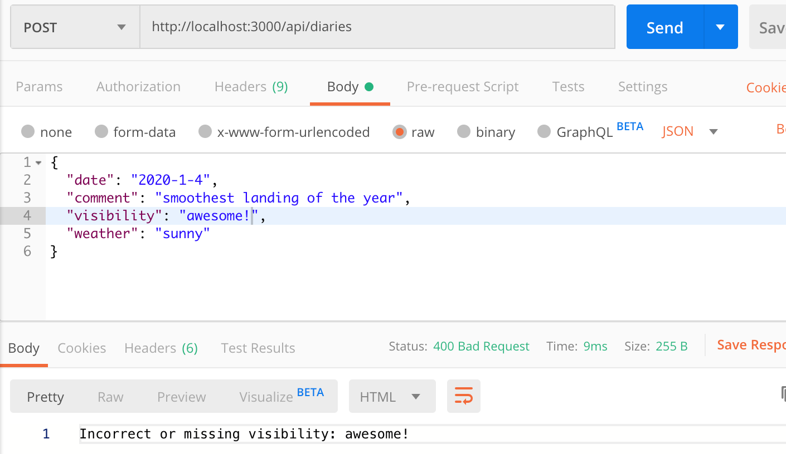
应用的源代码可以在GitHub上找到。